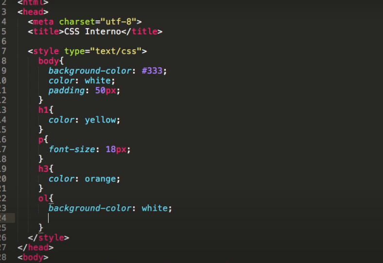

Definir CSS3 hoja de estilo de cascadas, con sus respectivas selectores y el uso que estos requieren, adicional se dara una explicacion detallada de los estilos que CSS3 posee los cuales son son internos y externos.
Es un lenguaje de diseño gráfico para definir y crear la presentación de un documento estructurado, es tambien muy usado para definir el diseño visual de los docuemntos web o interfaces de usuario escritas en HTML(lenguaje de marcas de hipertexto),con ayuda de css podemos crear nuestro propio sitio web, es una tecnologia usada por muchos sitios web con el fin de hacerlas mas atractivas a el usuario
 Una hoja de estilo interna se puede usar en una sólo página con un estilo único. Los estilos internos se definen dentro del elemento style dentro de la propia página HTML
Con una hoja de estilos externa, puedes cambiar el aspecto de un sitio web completo cambiando un sólo archivo. Para ello cada página debe incluir una referencia al archivo de hoja de estilos externa dentro del elemento "link" que se encuentra dentro de la sección head.
En CSS, los selectores son patrones que se utilizan para seleccionar los elementos que desea aplicar estilo,a continuacion mencionaremos algunos de los selectores de CSS3
| Selector | Ejemplo | Descripcion del ejemplo |
|---|---|---|
| .class | .title | Selecciona todos los elementos con class = "title" |
| #id | #name1 | Selecciona el elemento con id = "name1" |
| * | * | Selecciona todos los elementos |
| element | c | Selecciona todos los elementos "c" |
| [attribute] | [target] | Selecciona todos los elementos con un atributo target |
| :active | c:active | Selecciona el enlace activo |